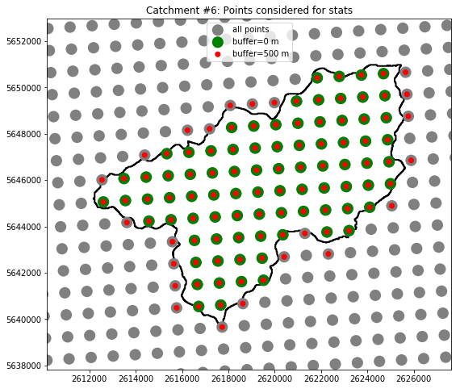
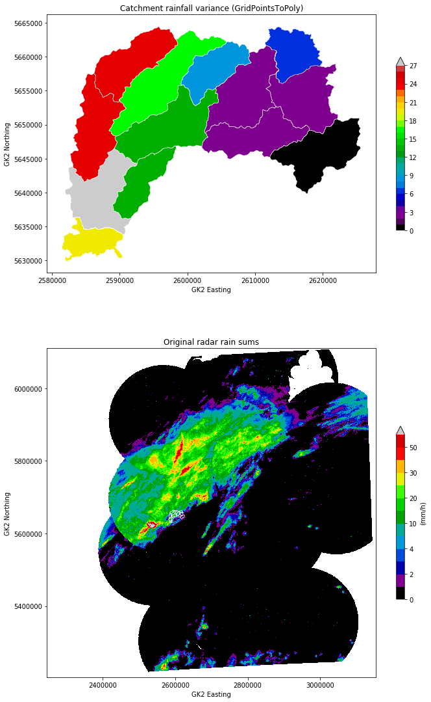
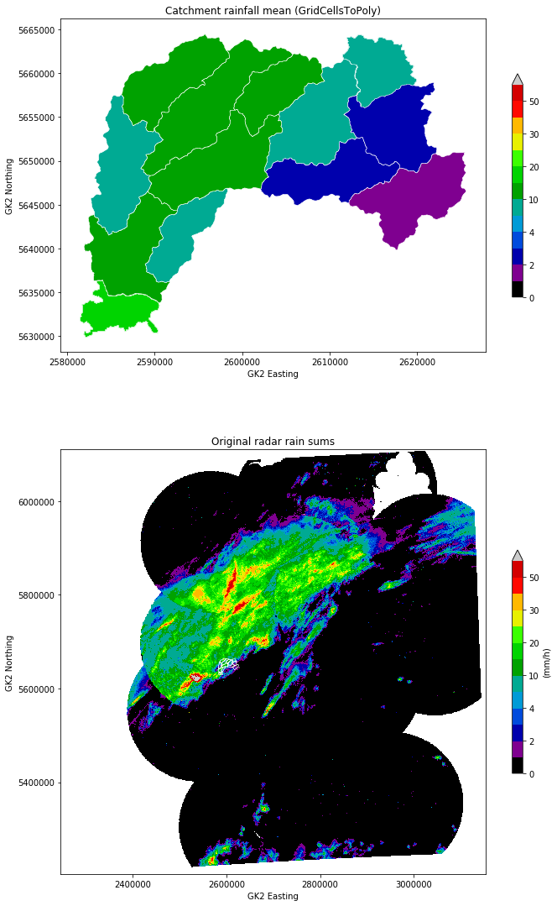
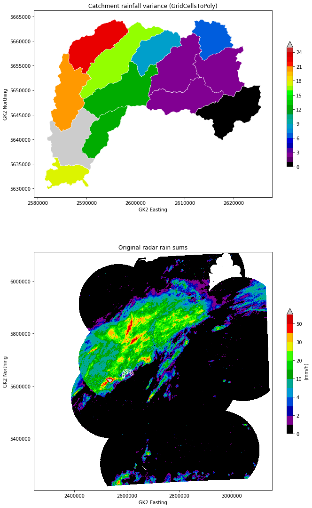
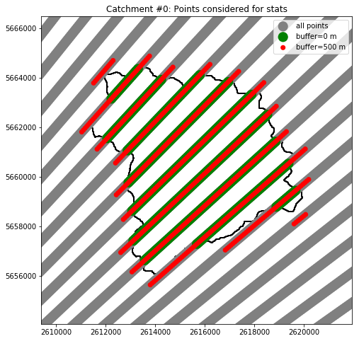
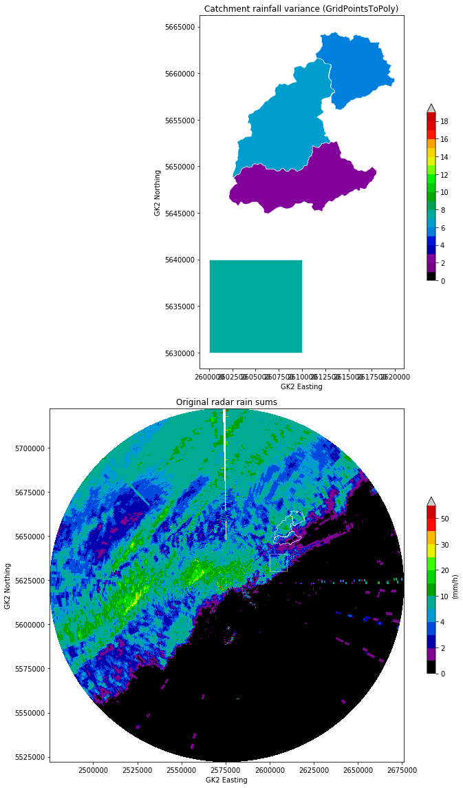
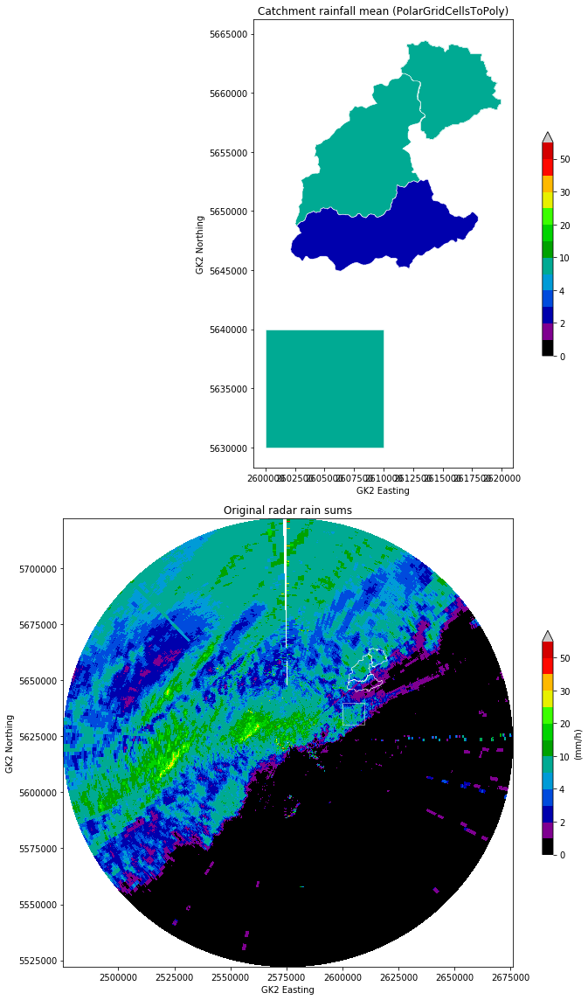
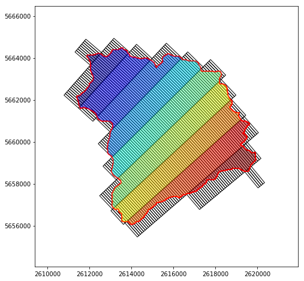
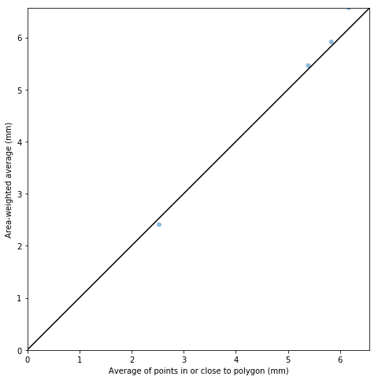

Zonal Statistics Example¶
In [2]:
import wradlib as wrl
import matplotlib.pyplot as pl
import matplotlib as mpl
import warnings
warnings.filterwarnings('ignore')
try:
get_ipython().magic("matplotlib inline")
except:
pl.ion()
import numpy as np
/home/travis/miniconda/envs/wradlib/lib/python2.7/site-packages/h5py/__init__.py:36: FutureWarning: Conversion of the second argument of issubdtype from `float` to `np.floating` is deprecated. In future, it will be treated as `np.float64 == np.dtype(float).type`.
from ._conv import register_converters as _register_converters
Setup Examples¶
In [3]:
def testplot(cats, catsavg, xy, data,
levels=[0, 1, 2, 3, 4, 5, 10, 15, 20, 25, 30, 40, 50, 100],
title=""):
"""Quick test plot layout for this example file
"""
colors = pl.cm.spectral(np.linspace(0, 1, len(levels)))
mycmap, mynorm = from_levels_and_colors(levels, colors, extend="max")
radolevels = [0, 1, 2, 3, 4, 5, 10, 15, 20, 25, 30, 40, 50, 100]
radocolors = pl.cm.spectral(np.linspace(0, 1, len(radolevels)))
radocmap, radonorm = from_levels_and_colors(radolevels, radocolors,
extend="max")
fig = pl.figure(figsize=(10, 16))
# Average rainfall sum
ax = fig.add_subplot(211, aspect="equal")
coll = PatchCollection(cats, array=catsavg, cmap=mycmap, norm=mynorm,
edgecolors='white', lw=0.5)
ax.add_collection(coll)
ax.autoscale()
pl.colorbar(coll, ax=ax, shrink=0.5)
pl.xlabel("GK2 Easting")
pl.ylabel("GK2 Northing")
pl.title(title)
pl.draw()
# Original radar data
ax1 = fig.add_subplot(212, aspect="equal")
pm = pl.pcolormesh(xy[:, :, 0], xy[:, :, 1], np.ma.masked_invalid(data),
cmap=radocmap, norm=radonorm)
coll = PatchCollection(cats, facecolor='None', edgecolor='white', lw=0.5)
ax1.add_collection(coll)
cb = pl.colorbar(pm, ax=ax1, shrink=0.5)
cb.set_label("(mm/h)")
pl.xlabel("GK2 Easting")
pl.ylabel("GK2 Northing")
pl.title("Original radar rain sums")
pl.draw()
pl.tight_layout()
Zonal Stats Rectangular Grid¶
In [4]:
from matplotlib.collections import PatchCollection
from matplotlib.colors import from_levels_and_colors
import matplotlib.patches as patches
import datetime as dt
from osgeo import osr
In [5]:
# check for GEOS enabled GDAL
if not wrl.util.has_geos():
print("NO GEOS support within GDAL, aborting...")
exit(0)
In [6]:
# Get RADOLAN grid coordinates
grid_xy_radolan = wrl.georef.get_radolan_grid(900, 900)
x_radolan = grid_xy_radolan[:, :, 0]
y_radolan = grid_xy_radolan[:, :, 1]
# create radolan projection osr object
proj_stereo = wrl.georef.create_osr("dwd-radolan")
# create Gauss Krueger zone 2 projection osr object
proj_gk = osr.SpatialReference()
proj_gk.ImportFromEPSG(31466)
# transform radolan polar stereographic projection to GK2
xy = wrl.georef.reproject(grid_xy_radolan,
projection_source=proj_stereo,
projection_target=proj_gk)
# Open shapefile (already in GK2)
shpfile = wrl.util.get_wradlib_data_file('shapefiles/agger/agger_merge.shp')
dataset, inLayer = wrl.io.open_shape(shpfile)
cats, keys = wrl.georef.get_shape_coordinates(inLayer)
# Read and prepare the actual data (RADOLAN)
f = wrl.util.get_wradlib_data_file(
'radolan/misc/raa01-sf_10000-1406100050-dwd---bin.gz')
data, attrs = wrl.io.read_RADOLAN_composite(f, missing=np.nan)
sec = attrs['secondary']
data.flat[sec] = np.nan
# Reduce grid size using a bounding box (to enhancing performance)
bbox = inLayer.GetExtent()
buffer = 5000.
bbox = dict(left=bbox[0] - buffer, right=bbox[1] + buffer,
bottom=bbox[2] - buffer, top=bbox[3] + buffer)
mask, shape = wrl.zonalstats.mask_from_bbox(xy[..., 0], xy[..., 1],
bbox)
xy_ = np.vstack((xy[..., 0][mask].ravel(), xy[..., 1][mask].ravel())).T
data_ = data[mask]
In [7]:
###########################################################################
# Approach #1: Assign grid points to each polygon and compute the average.
#
# - Uses matplotlib.path.Path
# - Each point is weighted equally (assumption: polygon >> grid cell)
# - this is quick, but theoretically dirty
###########################################################################
t1 = dt.datetime.now()
# Create instance of type ZonalDataPoint from source grid and
# catchment array
zd = wrl.zonalstats.ZonalDataPoint(xy_, cats, srs=proj_gk, buf=500.)
# dump to file (for later use - see below)
zd.dump_vector('test_zonal_points_cart')
# Create instance of type GridPointsToPoly from zonal data object
obj1 = wrl.zonalstats.GridPointsToPoly(zd)
isecs1 = obj1.zdata.isecs # for plotting (see below)
t2 = dt.datetime.now()
# Compute stats for target polygons
avg1 = obj1.mean(data_.ravel())
var1 = obj1.var(data_.ravel())
t3 = dt.datetime.now()
# Create instance of type GridPointsToPoly from zonal data file
# (much faster)
obj1 = wrl.zonalstats.GridPointsToPoly('test_zonal_points_cart')
t4 = dt.datetime.now()
print("Approach #1 computation time:")
print("\tCreate object from scratch: %f "
"seconds" % (t2 - t1).total_seconds())
print("\tCreate object from dumped file: %f "
"seconds" % (t4 - t3).total_seconds())
print("\tCompute stats using object: %f "
"seconds" % (t3 - t2).total_seconds())
# PLOTTING Approach #1
# Just a test for plotting results with zero buffer
zd2 = wrl.zonalstats.ZonalDataPoint(xy_, cats, buf=0)
# Create instance of type GridPointsToPoly from zonal data object
obj2 = wrl.zonalstats.GridPointsToPoly(zd2)
isecs2 = obj2.zdata.isecs
Approach #1 computation time:
Create object from scratch: 9.420181 seconds
Create object from dumped file: 0.046580 seconds
Compute stats using object: 0.005298 seconds
In [8]:
# Illustrate results for an example catchment i
i = 6 # try e.g. 48, 100
fig = pl.figure(figsize=(10,8))
ax = fig.add_subplot(111, aspect="equal")
# Target polygon patches
trg_patches = [patches.Polygon(item, True) for item in obj1.zdata.trg.data]
trg_patch = [trg_patches[i]]
p = PatchCollection(trg_patch, facecolor="None", edgecolor="black",
linewidth=2)
ax.add_collection(p)
# pips
sources = obj1.zdata.src.data
pl.scatter(sources[:, 0], sources[:, 1], s=200, c="grey",
edgecolor="None", label="all points")
pl.scatter(isecs2[i][:, 0], isecs2[i][:, 1], s=200, c="green",
edgecolor="None", label="buffer=0 m")
pl.scatter(isecs1[i][:, 0], isecs1[i][:, 1], s=50, c="red",
edgecolor="None", label="buffer=500 m")
bbox = wrl.zonalstats.get_bbox(cats[i][:, 0], cats[i][:, 1])
pl.xlim(bbox["left"] - 2000, bbox["right"] + 2000)
pl.ylim(bbox["bottom"] - 2000, bbox["top"] + 2000)
pl.legend()
pl.title("Catchment #%d: Points considered for stats" % i)
Out[8]:
Text(0.5,1,u'Catchment #6: Points considered for stats')

In [9]:
# Plot average rainfall and original data
testplot(trg_patches, avg1, xy, data,
title="Catchment rainfall mean (GridPointsToPoly)")

In [10]:
testplot(trg_patches, var1, xy, data,
levels=np.arange(0, np.max(var1), 1.),
title="Catchment rainfall variance (GridPointsToPoly)")

In [11]:
###########################################################################
# Approach #2: Compute weighted mean based on fraction of source polygons
# in target polygons
#
# - This is more accurate (no assumptions), but probably slower...
###########################################################################
# Create vertices for each grid cell
# (MUST BE DONE IN NATIVE RADOLAN COORDINATES)
grdverts = wrl.zonalstats.grid_centers_to_vertices(x_radolan[mask],
y_radolan[mask], 1.,
1.)
# And reproject to Cartesian reference system (here: GK2)
grdverts = wrl.georef.reproject(grdverts,
projection_source=proj_stereo,
projection_target=proj_gk)
t1 = dt.datetime.now()
# Create instance of type ZonalDataPoly from source grid and
# catchment array
zd = wrl.zonalstats.ZonalDataPoly(grdverts, cats, srs=proj_gk)
# dump to file
zd.dump_vector('test_zonal_poly_cart')
# Create instance of type GridPointsToPoly from zonal data object
obj3 = wrl.zonalstats.GridCellsToPoly(zd)
t2 = dt.datetime.now()
# Compute stats for target polygons
avg3 = obj3.mean(data_.ravel())
var3 = obj3.var(data_.ravel())
t3 = dt.datetime.now()
# Create instance of type GridCellsToPoly from zonal data file
obj3 = wrl.zonalstats.GridCellsToPoly('test_zonal_poly_cart')
t4 = dt.datetime.now()
print("Approach #2 computation time:")
print("\tCreate object from scratch: %f "
"seconds" % (t2 - t1).total_seconds())
print("\tCreate object from dumped file: %f "
"seconds" % (t4 - t3).total_seconds())
print("\tCompute stats using object: %f "
"seconds" % (t3 - t2).total_seconds())
Approach #2 computation time:
Create object from scratch: 3.987260 seconds
Create object from dumped file: 0.090876 seconds
Compute stats using object: 0.004062 seconds
In [12]:
# PLOTTING Approach #2
# Target polygon patches
trg_patches = [patches.Polygon(item, True) for item in obj3.zdata.trg.data]
# Plot average rainfall and original data
testplot(trg_patches, avg3, xy, data,
title="Catchment rainfall mean (GridCellsToPoly)")

In [13]:
testplot(trg_patches, var3, xy, data,
levels=np.arange(0, np.max(var3), 1.),
title="Catchment rainfall variance (GridCellsToPoly)")

In [14]:
# Illustrate results for an example catchment i
i = 6 # try any index between 0 and 13
fig = pl.figure(figsize=(10,8))
ax = fig.add_subplot(111, aspect="equal")
# Grid cell patches
src_index = obj3.zdata.get_source_index(i)
grd_patches = [patches.Polygon(item)
for item in obj3.zdata.src.get_data_by_idx(src_index)]
p = PatchCollection(grd_patches, facecolor="None", edgecolor="black")
ax.add_collection(p)
# Target polygon patches
trg_patch = [trg_patches[i]]
p = PatchCollection(trg_patch, facecolor="None", edgecolor="red",
linewidth=2)
ax.add_collection(p)
# View the actual intersections
isecs = obj3.zdata.get_isec(i)
isec_patches = wrl.zonalstats.numpy_to_pathpatch(isecs)
colors = 100 * np.linspace(0, 1., len(isec_patches))
p = PatchCollection(isec_patches, cmap=pl.cm.jet, alpha=0.5)
p.set_array(np.array(colors))
ax.add_collection(p)
bbox = wrl.zonalstats.get_bbox(cats[i][:, 0], cats[i][:, 1])
pl.xlim(bbox["left"] - 2000, bbox["right"] + 2000)
pl.ylim(bbox["bottom"] - 2000, bbox["top"] + 2000)
pl.draw()

In [15]:
# Compare estimates
maxlim = np.max(np.concatenate((avg1, avg3)))
fig = pl.figure(figsize=(10, 8))
ax = fig.add_subplot(111, aspect="equal")
pl.scatter(avg1, avg3, edgecolor="None", alpha=0.5)
pl.xlabel("Average of points in or close to polygon (mm)")
pl.ylabel("Area-weighted average (mm)")
pl.xlim(0, maxlim)
pl.ylim(0, maxlim)
pl.plot([-1, maxlim + 1], [-1, maxlim + 1], color="black")
pl.show()

Zonal Stats Polar Grid¶
In [16]:
filename = wrl.util.get_wradlib_data_file('hdf5/rainsum_boxpol_20140609.h5')
data, attrib = wrl.io.from_hdf5(filename)
# get Lat, Lon, range, azimuth, rays, bins out of radar data
lat1 = attrib['Latitude']
lon1 = attrib['Longitude']
r1 = attrib['r']
a1 = attrib['az']
rays = a1.shape[0]
bins = r1.shape[0]
# create polar grid polygon vertices in lat,lon
radar_ll = wrl.georef.polar2polyvert(r1, a1, (lon1, lat1))
# create polar grid centroids in lat,lon
rlon, rlat = wrl.georef.polar2centroids(r1, a1, (lon1, lat1))
radar_llc = np.dstack((rlon, rlat))
# setup OSR objects
proj_gk = osr.SpatialReference()
proj_gk.ImportFromEPSG(31466)
proj_ll = osr.SpatialReference()
proj_ll.ImportFromEPSG(4326)
# project ll grids to GK2
radar_gk = wrl.georef.reproject(radar_ll, projection_source=proj_ll,
projection_target=proj_gk)
radar_gkc = wrl.georef.reproject(radar_llc, projection_source=proj_ll,
projection_target=proj_gk)
# reshape
radar_gk.shape = (rays, bins, 5, 2)
radar_gkc.shape = (rays, bins, 2)
shpfile = wrl.util.get_wradlib_data_file('shapefiles/agger/agger_merge.shp')
dataset, inLayer = wrl.io.open_shape(shpfile)
cats, keys = wrl.georef.get_shape_coordinates(inLayer)
# create synthetic box
box = np.array([[2600000., 5630000.], [2600000., 5640000.],
[2610000., 5640000.], [2610000., 5630000.],
[2600000., 5630000.]])
l = list(cats)
# Todo: remove after testing
l = l[0:3]
l.append(box)
cats = np.array(l)
bbox = inLayer.GetExtent()
# create catchment bounding box
buffer = 5000.
bbox = dict(left=bbox[0] - buffer, right=bbox[1] + buffer,
bottom=bbox[2] - buffer, top=bbox[3] + buffer)
mask, shape = wrl.zonalstats.mask_from_bbox(radar_gkc[..., 0],
radar_gkc[..., 1],
bbox,
polar=True)
radar_gkc_ = radar_gkc[mask, :]
radar_gk_ = radar_gk[mask]
data_ = data[mask]
In [17]:
###########################################################################
# Approach #1: Assign grid points to each polygon and compute the average.
#
# - Uses matplotlib.path.Path
# - Each point is weighted equally (assumption: polygon >> grid cell)
# - this is quick, but theoretically dirty
# - for polar grids a range-area dependency has to be taken into account
###########################################################################
t1 = dt.datetime.now()
# Create instance of type ZonalDataPoint from source grid and
# catchment array
zd = wrl.zonalstats.ZonalDataPoint(radar_gkc_, cats, srs=proj_gk,
buf=500.)
# dump to file
zd.dump_vector('test_zonal_points')
# Create instance of type GridPointsToPoly from zonal data object
obj1 = wrl.zonalstats.GridPointsToPoly(zd)
isecs1 = obj1.zdata.isecs
t2 = dt.datetime.now()
# Compute stats for target polygons
avg1 = obj1.mean(data_.ravel())
var1 = obj1.var(data_.ravel())
t3 = dt.datetime.now()
# Create instance of type GridPointsToPoly from zonal data file
obj1 = wrl.zonalstats.GridPointsToPoly('test_zonal_points')
t4 = dt.datetime.now()
print ("Approach #1 computation time:")
print(
"\tCreate object from scratch: %f seconds" % (t2 - t1).total_seconds())
print(
"\tCreate object from dumped file: %f seconds" % (t4 - t3).total_seconds())
print(
"\tCompute stats using object: %f seconds" % (t3 - t2).total_seconds())
Approach #1 computation time:
Create object from scratch: 6.204520 seconds
Create object from dumped file: 0.251963 seconds
Compute stats using object: 0.002035 seconds
In [18]:
# PLOTTING Approach #2
# Just a test for plotting results with zero buffer
zd = wrl.zonalstats.ZonalDataPoint(radar_gkc_, cats, buf=0)
# Create instance of type GridPointsToPoly from zonal data object
obj2 = wrl.zonalstats.GridPointsToPoly(zd)
isecs2 = obj2.zdata.isecs
In [19]:
# Illustrate results for an example catchment i
i = 0 # try e.g. 6, 12
fig = pl.figure(figsize=(10,8))
ax = fig.add_subplot(111, aspect="equal")
# Target polygon patches
trg_patches = [patches.Polygon(item, True) for item in obj1.zdata.trg.data]
trg_patch = [trg_patches[i]]
p = PatchCollection(trg_patch, facecolor="None", edgecolor="black",
linewidth=2)
ax.add_collection(p)
# pips
sources = obj1.zdata.src.data
pl.scatter(sources[:, 0], sources[:, 1], s=200, c="grey",
edgecolor="None", label="all points")
pl.scatter(isecs2[i][:, 0], isecs2[i][:, 1], s=200, c="green",
edgecolor="None", label="buffer=0 m")
pl.scatter(isecs1[i][:, 0], isecs1[i][:, 1], s=50, c="red",
edgecolor="None", label="buffer=500 m")
bbox = wrl.zonalstats.get_bbox(cats[i][:, 0], cats[i][:, 1])
pl.xlim(bbox["left"] - 2000, bbox["right"] + 2000)
pl.ylim(bbox["bottom"] - 2000, bbox["top"] + 2000)
pl.legend()
pl.title("Catchment #%d: Points considered for stats" % i)
Out[19]:
Text(0.5,1,u'Catchment #0: Points considered for stats')

In [20]:
# Plot average rainfall and original data
testplot(trg_patches, avg1, radar_gkc, data,
title="Catchment rainfall mean (GridPointsToPoly)")

In [21]:
testplot(trg_patches, var1, radar_gkc, data, levels=np.arange(0, 20, 1.0),
title="Catchment rainfall variance (GridPointsToPoly)")

In [22]:
###########################################################################
# Approach #2: Compute weighted mean based on fraction of source polygons
# in target polygons
#
# - This is more accurate (no assumptions), but probably slower...
###########################################################################
t1 = dt.datetime.now()
# Create instance of type ZonalDataPoly from source grid and
# catchment array
zd = wrl.zonalstats.ZonalDataPoly(radar_gk_, cats, srs=proj_gk)
# dump to file
zd.dump_vector('test_zonal_poly')
# Create instance of type GridPointsToPoly from zonal data object
obj3 = wrl.zonalstats.GridCellsToPoly(zd)
obj3.zdata.dump_vector('test_zonal_poly')
t2 = dt.datetime.now()
avg3 = obj3.mean(data_.ravel())
var3 = obj3.var(data_.ravel())
t3 = dt.datetime.now()
# Create instance of type GridCellsToPoly from zonal data file
obj4 = wrl.zonalstats.GridCellsToPoly('test_zonal_poly')
t4 = dt.datetime.now()
print ("Approach #2 computation time:")
print(
"\tCreate object from scratch: %f seconds" % (t2 - t1).total_seconds())
print(
"\tCreate object from dumped file: %f seconds" % (t4 - t3).total_seconds())
print(
"\tCompute stats using object: %f seconds" % (t3 - t2).total_seconds())
obj3.zdata.trg.dump_raster('test_zonal_hdr.nc', 'netCDF', 'mean',
pixel_size=100.)
obj3.zdata.trg.dump_vector('test_zonal_shp')
obj3.zdata.trg.dump_vector('test_zonal_json.geojson', 'GeoJSON')
# Target polygon patches
trg_patches = [patches.Polygon(item, True) for item in obj3.zdata.trg.data]
Approach #2 computation time:
Create object from scratch: 17.892988 seconds
Create object from dumped file: 1.108133 seconds
Compute stats using object: 0.003775 seconds
Rasterize layers
In [23]:
# Plot average rainfall and original data
testplot(trg_patches, avg3, radar_gkc, data,
title="Catchment rainfall mean (PolarGridCellsToPoly)")

In [24]:
testplot(trg_patches, var3, radar_gkc, data, levels=np.arange(0, 20, 1.0),
title="Catchment rainfall variance (PolarGridCellsToPoly)")

In [25]:
# Illustrate results for an example catchment i
i = 0 # try any index between 0 and 13
fig = pl.figure(figsize=(10,8))
ax = fig.add_subplot(111, aspect="equal")
# Grid cell patches
src_index = obj3.zdata.get_source_index(i)
grd_patches = [patches.Polygon(item) for item in
obj3.zdata.src.get_data_by_idx(src_index)]
p = PatchCollection(grd_patches, facecolor="None", edgecolor="black")
ax.add_collection(p)
# Target polygon patches
trg_patch = [trg_patches[i]]
p = PatchCollection(trg_patch, facecolor="None", edgecolor="red",
linewidth=2)
ax.add_collection(p)
# View the actual intersections
t1 = dt.datetime.now()
isecs = obj3.zdata.get_isec(i)
isec_patches = wrl.zonalstats.numpy_to_pathpatch(isecs)
colors = 100 * np.linspace(0, 1., len(isec_patches))
p = PatchCollection(isec_patches, cmap=pl.cm.jet, alpha=0.5)
p.set_array(np.array(colors))
ax.add_collection(p)
bbox = wrl.zonalstats.get_bbox(cats[i][:, 0], cats[i][:, 1])
pl.xlim(bbox["left"] - 2000, bbox["right"] + 2000)
pl.ylim(bbox["bottom"] - 2000, bbox["top"] + 2000)
pl.draw()
t2 = dt.datetime.now()
print("plot intersection takes: %f seconds" % (t2 - t1).total_seconds())
plot intersection takes: 0.521531 seconds

In [26]:
# Compare estimates
maxlim = np.max(np.concatenate((avg1, avg3)))
fig = pl.figure(figsize=(10, 8))
ax = fig.add_subplot(111, aspect="equal")
pl.scatter(avg1, avg3, edgecolor="None", alpha=0.5)
pl.xlabel("Average of points in or close to polygon (mm)")
pl.ylabel("Area-weighted average (mm)")
pl.xlim(0, maxlim)
pl.ylim(0, maxlim)
pl.plot([-1, maxlim + 1], [-1, maxlim + 1], color="black")
pl.show()
